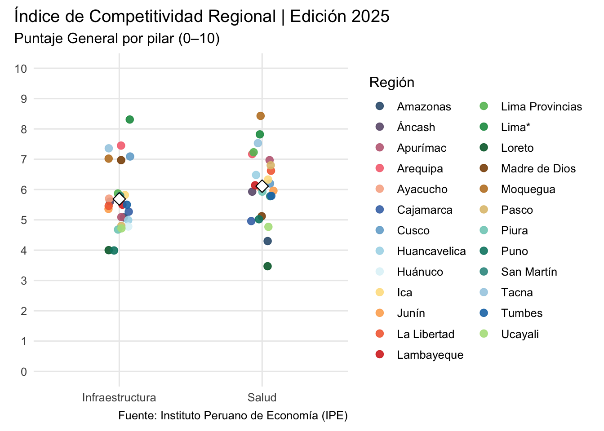

library(incorer)Manual
general_tabla()
Puntaje General por región con ediciones en columnas
Esta función es la primera de la familia de utilidades general_* y su objetivo es construir una tabla “ancha” con el puntaje General (0–10) del INCORE. Las filas corresponden a regiones y las columnas a las ediciones solicitadas, con encabezados del tipo puntaje_YYYY. Internamente, filtra únicamente las filas cuyo pilar empieza con “Índice de Competitividad Regional” (es decir, el índice de portada) y, por diseño, excluye la fila “Perú” salvo que se indique lo contrario.
Introducción
general_tabla() resuelve una necesidad frecuente en análisis y reporte: comparar de forma compacta el desempeño general por región a través de una o varias ediciones. Frente a un gráfico, la tabla facilita exportaciones, validaciones cruzadas y anexos metodológicos. Además, puede devolver un objeto tibble listo para manipulación posterior o, si se solicita, formatear una tabla gt con encabezados pulidos para su uso directo en informes y documentos.
Los argumentos usar_codigos e incluir_peru cumplen funciones operativas: el primero armoniza códigos/nombres de región antes de filtrar y el segundo decide si se incluye la fila “Perú” (promedio nacional). Salvo que tu salida requiera explícitamente a “Perú”, es razonable mantener el valor por defecto (excluido) para centrar la lectura en las regiones.
Parámetros (explicación y opciones)
A la hora de utilizar general_tabla(), las decisiones principales son: (i) qué ediciones se desean en columnas, (ii) qué universo de regiones se incluye (todas, subconjuntos o grupos), y (iii) si la salida debe ser tibble (para análisis) o gt (para presentación).
ediciones: determina las columnas de la tabla (una o varias ediciones).
Opciones y formato:
2019:2025 (rango continuo)
c(2018, 2020, 2023, 2025) (conjunto específico)
2025 (una sola edición)
Reglas defensivas: valores dentro de 2016 … 2025
regiones: controla el universo de filas (regiones) a incluir.
Opciones y formato:
“ALL” (por defecto; todas las regiones)
c(“Arequipa”, “Cusco”) (por nombre)
c(“ARE”, “CUS”) (por código)
Grupos “gr_costa”, “gr_sierra”, “gr_selva” (cuando están disponibles en tu ecosistema)
Exclusiones por patrón: “-Lima*”
Combinaciones: c(“gr_costa”, “La Libertad”, “-Lima*”)
gt: define el tipo de salida.
Opciones y formato:
FALSE (por defecto) ⇒ devuelve un tibble
TRUE ⇒ devuelve un objeto gt con encabezados tipo “Puntaje 2025”, etc.
Explicación conceptual
La función lee las ediciones indicadas, filtra únicamente el índice general de portada (filas cuyo pilar comienza con “Índice de Competitividad Regional”), incluye o excluye la fila “Perú” según se solicite y aplica el filtrado de regiones con soporte para grupos y exclusiones.
Luego prepara un único valor por combinación region–edicion (redondeo defensivo) y pivotea a formato ancho con nombres de columna puntaje_YYYY. En caso de valores duplicados, utiliza una media defensiva para consolidar. La salida final es un tibble ordenado (por región) o una tabla gt con encabezados legibles y formato numérico a dos decimales.
Ejemplos prácticos
Se asume el paquete cargado y las dependencias disponibles. Los ejemplos exploran funcionalidades propias del paquete: grupos gr_*, exclusiones por patrón, control de la fila “Perú” y salida gt.
1) Tabla simple para una edición (tibble por defecto)
Se desea lo siguiente: obtener la tabla del puntaje General por región para la edición 2025, en formato tibble.
tab1 <- general_tabla(
ediciones = 2025,
regiones = "ALL",
gt = FALSE
)
tab1# A tibble: 25 × 2
region puntaje_2025
<chr> <dbl>
1 Amazonas 4.31
2 Apurímac 5.1
3 Arequipa 6.91
4 Ayacucho 4.85
5 Cajamarca 4.38
6 Cusco 5.76
7 Huancavelica 4.82
8 Huánuco 4.37
9 Ica 6.37
10 Junín 5.22
# ℹ 15 more rowsResultado esperado. Un tibble con columnas region y puntaje_2025, filas ordenadas alfabéticamente; sin la fila “Perú” (por defecto).
2) Varias ediciones (2022–2025) y subconjunto por grupo costero
Se desea lo siguiente: comparar el bloque costero a través de varias ediciones, manteniendo salida en tibble.
tab2 <- general_tabla(
ediciones = 2022:2025,
regiones = "gr_costa",
gt = FALSE
)
tab2# A tibble: 11 × 5
region puntaje_2022 puntaje_2023 puntaje_2024 puntaje_2025
<chr> <dbl> <dbl> <dbl> <dbl>
1 Arequipa 6.48 6.59 6.63 6.91
2 Ica 5.97 6 6.3 6.37
3 La Libertad 5.12 5.02 5.24 5.54
4 Lambayeque 4.93 5.02 5.21 5.42
5 Lima Provincias 5.31 5.52 5.63 6.02
6 Lima* 6.89 6.81 7.05 7.34
7 Moquegua 6.95 7.22 7.37 7.38
8 Piura 4.52 4.39 4.59 4.88
9 Tacna 6.01 6.27 6.29 6.43
10 Tumbes 4.9 5.05 4.85 5.05
11 Áncash 4.89 4.93 5.23 5.4 Resultado esperado. Un tibble con columnas puntaje_2022, …, puntaje_2025 solo para las regiones incluidas en gr_costa, útil para análisis de tendencia tabular.
3) Inclusión de “Perú” y un patrón (costa)
Se desea lo siguiente: mostrar el promedio nacional en la tabla.
tab3 <- general_tabla(
ediciones = 2020:2025,
regiones = c("gr_costa", "Perú"),
incluir_peru = TRUE,
gt = FALSE
)
tab3# A tibble: 12 × 7
region puntaje_2020 puntaje_2021 puntaje_2022 puntaje_2023 puntaje_2024
<chr> <dbl> <dbl> <dbl> <dbl> <dbl>
1 Arequipa 6.93 6.25 6.48 6.59 6.63
2 Ica 6.52 5.89 5.97 6 6.3
3 La Libertad 5.34 4.94 5.12 5.02 5.24
4 Lambayeque 5.31 4.99 4.93 5.02 5.21
5 Lima Provin… 5.34 4.99 5.31 5.52 5.63
6 Lima* 7.39 6.68 6.89 6.81 7.05
7 Moquegua 7.1 6.66 6.95 7.22 7.37
8 Perú 5.03 4.61 4.79 4.77 5.02
9 Piura 4.96 4.36 4.52 4.39 4.59
10 Tacna 6.41 6.09 6.01 6.27 6.29
11 Tumbes 5.17 4.51 4.9 5.05 4.85
12 Áncash 5.21 4.73 4.89 4.93 5.23
# ℹ 1 more variable: puntaje_2025 <dbl>Resultado esperado. Un tibble con la fila “Perú” y las regiones costeras excepto las que coincidan con “Lima*”. Útil para contrastar selección vs. promedio país.
4) Salida gt con encabezados legibles (dos ediciones no contiguas)
Se desea lo siguiente: producir una tabla presentable para un informe, con dos ediciones específicas.
tab4 <- general_tabla(
ediciones = c(2021, 2025),
regiones = "ALL",
gt = TRUE
)
tab4| Índice de Competitividad Regional — Puntaje General | ||
|---|---|---|
| Ediciones 2021–2025 | ||
| region | Puntaje 2021 | Puntaje 2025 |
| Amazonas | 3.98 | 4.31 |
| Apurímac | 4.54 | 5.10 |
| Arequipa | 6.25 | 6.91 |
| Ayacucho | 4.21 | 4.85 |
| Cajamarca | 3.75 | 4.38 |
| Cusco | 4.65 | 5.76 |
| Huancavelica | 4.03 | 4.82 |
| Huánuco | 3.88 | 4.37 |
| Ica | 5.89 | 6.37 |
| Junín | 4.41 | 5.22 |
| La Libertad | 4.94 | 5.54 |
| Lambayeque | 4.99 | 5.42 |
| Lima Provincias | 4.99 | 6.02 |
| Lima* | 6.68 | 7.34 |
| Loreto | 2.77 | 3.45 |
| Madre de Dios | 4.19 | 4.89 |
| Moquegua | 6.66 | 7.38 |
| Pasco | 3.63 | 4.96 |
| Piura | 4.36 | 4.88 |
| Puno | 3.84 | 4.21 |
| San Martín | 3.88 | 4.76 |
| Tacna | 6.09 | 6.43 |
| Tumbes | 4.51 | 5.05 |
| Ucayali | 3.50 | 3.95 |
| Áncash | 4.73 | 5.40 |
Resultado esperado. Un objeto gt con título y subtítulo automáticos, columnas “Puntaje 2021” y “Puntaje 2025” formateadas a dos decimales.
5) Conjunto mixto (grupo + regiones explícitas) y salida gt
Se desea lo siguiente: combinar un grupo y regiones puntuales en una única tabla de varias ediciones, lista para reporte.
tab5 <- general_tabla(
ediciones = 2019:2025,
regiones = c("gr_sierra", "Arequipa", "La Libertad"),
gt = TRUE
)
tab5| Índice de Competitividad Regional — Puntaje General | |||||||
|---|---|---|---|---|---|---|---|
| Ediciones 2019–2025 | |||||||
| region | Puntaje 2019 | Puntaje 2020 | Puntaje 2021 | Puntaje 2022 | Puntaje 2023 | Puntaje 2024 | Puntaje 2025 |
| Apurímac | 4.31 | 4.79 | 4.54 | 4.71 | 4.80 | 5.00 | 5.10 |
| Arequipa | 6.82 | 6.93 | 6.25 | 6.48 | 6.59 | 6.63 | 6.91 |
| Ayacucho | 4.31 | 4.46 | 4.21 | 4.33 | 4.35 | 4.61 | 4.85 |
| Cajamarca | 3.60 | 4.22 | 3.75 | 4.21 | 3.79 | 4.23 | 4.38 |
| Cusco | 5.18 | 5.42 | 4.65 | 5.02 | 5.08 | 5.50 | 5.76 |
| Huancavelica | 3.52 | 3.91 | 4.03 | 3.97 | 3.84 | 4.35 | 4.82 |
| Huánuco | 3.62 | 4.04 | 3.88 | 3.87 | 3.65 | 4.07 | 4.37 |
| Junín | 4.45 | 4.78 | 4.41 | 4.61 | 4.75 | 5.01 | 5.22 |
| La Libertad | 5.08 | 5.34 | 4.94 | 5.12 | 5.02 | 5.24 | 5.54 |
| Pasco | 3.86 | 4.04 | 3.63 | 4.10 | 4.20 | 4.58 | 4.96 |
| Puno | 3.72 | 4.06 | 3.84 | 3.93 | 3.77 | 4.04 | 4.21 |
| Áncash | 4.73 | 5.21 | 4.73 | 4.89 | 4.93 | 5.23 | 5.40 |
Resultado esperado. Una tabla gt con las regiones de gr_sierra más Arequipa y La Libertad, y columnas puntaje_2019 … puntaje_2025. Lista para exportar o incorporar en un documento.
Recomendaciones de uso e interpretación
Tibble vs. gt.
Usa gt = FALSE cuando la tabla sea insumo para cálculos, fusiones o validaciones.
Usa gt = TRUE cuando priorices presentación en informes o anexos.
Con “Perú” o sin “Perú”.
incluir_peru = TRUE es útil para referencia país;
mantenerlo en FALSE enfoca la atención en la heterogeneidad regional.
Grupos y exclusiones.
- Apalanca “gr_costa” / “gr_sierra” / “gr_selva” y patrones como “-Lima*” para subconjuntos curados.
Orden y claridad.
Las columnas se crean como puntaje_YYYY y respetan el orden de ediciones solicitado.
Los valores están redondeados a dos decimales para coherencia con el resto del paquete.
¿Quieres que adapte alguno de estos ejemplos a ediciones o bloques regionales específicos de tu manual, o seguimos con la próxima función con este mismo formato?
general_barras()
Visualización del puntaje General por región en una edición del INCORE
Introducción
La función general_barras() ofrece una representación clara y jerárquica de los puntajes del Índice de Competitividad Regional (INCORE) en una edición determinada. Su diseño se centra en el formato de barras horizontales ordenadas de mayor a menor, lo que facilita identificar de inmediato las regiones que destacan por su competitividad y aquellas que se encuentran rezagadas. Esta función resulta particularmente valiosa cuando se requiere mostrar un panorama sintético y visualmente contundente del ranking regional, ya sea para fines académicos, informes de política pública o presentaciones institucionales.
En el marco del INCORE, donde cada región obtiene un puntaje entre 0 y 10 , la función permite elegir entre dos aproximaciones: representar el índice general total, que resume el desempeño en los seis pilares (Entorno Económico, Laboral, Infraestructura, Salud, Educación e Instituciones), o enfocarse en el puntaje General de un pilar específico, con lo cual se resalta una dimensión particular de la competitividad. Esta flexibilidad convierte a general_barras() en una herramienta versátil, adecuada tanto para un primer acercamiento como para análisis más focalizados.
Parámetros
La utilización de la función descansa en la combinación de algunos argumentos clave. Cada uno de ellos abre distintas posibilidades de análisis:
edicion: corresponde al año de análisis del INCORE. Debe indicarse un valor único dentro del rango de disponibilidad.
Opciones:
- 2016 … 2025
pilar: define si se grafica el índice general total o el General de un pilar específico.
Opciones:
NULL (por defecto: índice general total)
“NOMBRE_DEL_PILAR” (ejemplo: “Salud”)
“CODIGO_PILAR” (ejemplo: “SAL”)
regiones: delimita el conjunto de regiones a mostrar. Se aceptan nombres, códigos o grupos predefinidos.
Opciones:
“ALL” (por defecto: todas las regiones)
c(“REGION1”, “REGION2”)
c(“COD1”, “COD2”)
c(“gr_norte”, “gr_sur”)
Combinaciones mixtas (ejemplo: c(“gr_norte”, “Lima”, “La Libertad”))
paleta: establece la paleta cualitativa de colores para distinguir regiones.
Opciones:
“ipe” (por defecto, con la gama institucional del paquete)
“okabe_ito” (diseñada para accesibilidad visual)
“viridis” (escala perceptualmente uniforme, útil con muchas categorías)
mostrar_leyenda: determina si se incluye la leyenda en el gráfico.
Opciones:
FALSE (por defecto)
TRUE
Los parámetros usar_codigos e incluir_peru son auxiliares: el primero asegura que los códigos regionales o de pilar se traduzcan a nombres oficiales, mientras que el segundo permite incluir el promedio nacional de “Perú” como referencia en el gráfico.
Explicación conceptual
El proceso interno de la función puede describirse en tres fases:
Preparación de datos. Se leen los resultados del INCORE para la edición indicada. Dependiendo de la selección de pilar, se filtra el índice general total o el puntaje General de un pilar específico.
Ajustes y filtros. Se excluye “Perú” de manera predeterminada (a menos que se indique lo contrario) y se aplica el filtro de regiones, con soporte para grupos predefinidos. Posteriormente, se consolidan los valores y se asegura que cada región tenga un único puntaje.
Visualización. Se construye un gráfico con barras horizontales ordenadas de mayor a menor, etiquetas numéricas con dos decimales y una escala fija entre 0 y 10. El uso de colores diferenciados por región permite reforzar la legibilidad y la comparación.
La salida final es un objeto ggplot, lo que significa que puede ser modificado, guardado o integrado en flujos de trabajo de visualización más amplios.
Ejemplos
1) Visualización general de la edición 2025
Se desea lo siguiente: generar un ranking completo de las 25 regiones para el índice general total en la edición 2025.
graf1 <- general_barras(edicion = 2025)
graf1Resultado esperado. Un gráfico de barras horizontales que muestra a todas las regiones ordenadas por su puntaje total en 2025.
2) Enfoque por pilar (nombre) con leyenda activada
Se desea lo siguiente: explorar el desempeño de las regiones en el pilar de Salud.
graf2 <- general_barras(
edicion = 2025,
pilar = "Salud",
mostrar_leyenda = TRUE
)
graf2Resultado esperado. Ranking regional para el pilar Salud, con la leyenda activada para identificar los colores asociados.
3) Subconjunto de regiones (grupo y nombres)
Se desea lo siguiente: reducir la visualización a un grupo de regiones del norte y dos regiones adicionales.
graf3 <- general_barras(
edicion = 2025,
regiones = c("gr_norte", "Lima*", "La Libertad")
)
graf3Resultado esperado. Un gráfico con solo las regiones especificadas, manteniendo la escala común de 0 a 10.
4) Inclusión de “Perú” y cambio de paleta
Se desea lo siguiente: incluir la referencia nacional y utilizar una paleta perceptualmente uniforme.
graf4 <- general_barras(
edicion = 2025,
pilar = "Infraestructura",
incluir_peru = TRUE,
paleta = "viridis"
)
graf4
Resultado esperado. Ranking del pilar Infraestructura con la fila “Perú” como punto de comparación y colores adaptados a “viridis”.
5) Comparación focalizada de regiones líderes y rezagadas
Se desea lo siguiente: destacar únicamente sesis regiones del índice general total en 2025.
graf5 <- general_barras(
edicion = 2025,
regiones = c("Moquegua", "Lima*", "Arequipa",
"Loreto", "Ucayali", "Puno"),
paleta = "okabe_ito",
mostrar_leyenda = TRUE
)
graf5Resultado esperado. Gráfico con seis barras que permiten comparar visualmente el contraste entre los primeros lugares (Moquegua, Lima*, Arequipa) y los últimos (Loreto, Ucayali, Puno), siguiendo los resultados oficiales del INCORE .
general_dispersion_pilares()
Dispersión del puntaje General por pilar (una edición)
La función integra la familia de visualizaciones general_* y su objetivo es representar, para una edición del INCORE, la distribución del puntaje General (0–10) de las regiones a lo largo de los pilares. Cada pilar constituye el eje X y cada punto corresponde al puntaje General de una región en ese pilar. El resultado es una vista comparativa y transversal: permite observar, en un mismo gráfico, cómo se “abren” o “cierran” las dispersiones por pilar, dónde se ubica el promedio nacional y qué tan heterogéneo es el desempeño por dimensión.
Introducción
general_dispersion_pilares() aborda un problema típico en informes comparativos: entender la variabilidad entre regiones por dimensiones (pilares) dentro de un mismo año. Mientras que un ranking de barras prioriza el orden, esta función prioriza la distribución: ¿en qué pilares existe mayor concentración de regiones en torno a valores similares? ¿Dónde se observan colas más pronunciadas? ¿Cómo se ubican las regiones respecto del promedio nacional? La lectura simultánea por pilares facilita detectar asimetrías: por ejemplo, un pilar con medias similares pero dispersión alta frente a otro con dispersión baja, o clusters de regiones que tienden a agruparse en determinados pilares.
Parámetros
La lógica de uso parte de una edición y, opcionalmente, filtros de regiones y pilares. Existen además parámetros de estética que permiten aclarar la lectura (jitter para separar puntos, estilo del promedio) y una paleta cualitativa para distinguir regiones.
edicion: fija la edición (año) del INCORE a visualizar.
Opciones y formato:
integer(1)
2016 … 2025
regiones: delimita el universo de regiones a mostrar, admite nombres, códigos, grupos gr_*, e inclusiones/exclusiones con prefijos como “-”.
Opciones y formato:
“ALL” (por defecto: todas las regiones)
c(“REGION1”, “REGION2”)
c(“COD1”, “COD2”)
c(“gr_costa”, “gr_sierra”, “gr_selva”) (según los grupos definidos en el paquete)
Exclusiones: “-Lima*” (ejemplo de patrón para excluir)
Combinaciones mixtas: c(“gr_costa”, “La Libertad”, “-Lima*”)
pilares: selecciona los pilares a incluir, puede mezclar nombres y códigos (si se cuenta con catálogos activos).
Opciones y formato:
“ALL” (por defecto: “Entorno económico”, “Laboral”, “Infraestructura”, “Salud”, “Educación”, “Instituciones”)
Nombres: c(“Salud”, “Educación”)
Códigos: c(“SAL”, “EDU”)
Mezcla: c(“SAL”, “Educación”, “INF”)
paleta: paleta cualitativa para colorear por región (colores consistentes a través de pilares).
Opciones y formato:
“ipe” (por defecto)
“okabe_ito” (accesible para daltonismo)
“viridis” (perceptualmente uniforme, recomendable con muchas regiones)
mostrar_promedio: añade un marcador del promedio nacional (promedio entre regiones) por pilar.
Opciones y formato:
TRUE (por defecto)
FALSE
promedio_shape, promedio_size, promedio_color, promedio_fill: controlan la estética del marcador de promedio (forma, tamaño, color de borde y relleno).
Opciones (típicas):
promedio_shape = 23 (rombo relleno)
promedio_size = 3.5
promedio_color = “black”
promedio_fill = “white”
jitter_width, jitter_height: amplitud del jitter para separar puntos que podrían superponerse vertical u horizontalmente.
Opciones y formato:
jitter_width = 0.08 (por defecto)
jitter_height = 0.0 (por defecto)
El parámetro usar_codigos cumple una función operativa secundaria: si es TRUE, habilita la traducción de códigos de región/pilar a nombres oficiales mediante los catálogos del paquete, manteniendo consistencia editorial.
Explicación conceptual
La función lee los datos de la edición indicada, filtra las filas correspondientes al indicador “General” de cada pilar canónico y excluye la fila “Perú” para concentrar el análisis en dispersiones inter-regionales. Si se especifican pilares, traduce y filtra según nombres/códigos, si se especifican regiones, resuelve grupos gr_* y exclusiones. Como salvaguarda, consolida un valor por (región, pilar) y prepara una paleta cualitativa estable para todas las regiones del subconjunto. La marcación del promedio nacional añade un referente en cada pilar, útil para identificar pilares por encima/por debajo de la media. La geometría base es un geom_jitter con límites fijos 0–10 en y, lo que estandariza la comparación entre pilares y evita interpretaciones sensibles a escalas variables.
Ejemplos
1) Dispersión completa por pilares en una edición
Se desea lo siguiente: visualizar la dispersión del puntaje General de todas las regiones en todos los pilares para una edición reciente.
p1 <- general_dispersion_pilares(
edicion = 2025,
regiones = "ALL",
pilares = "ALL"
)
p1Resultado esperado. Puntos por región en cada pilar, con promedio nacional marcado (por defecto). Permite detectar pilares con dispersión alta/baja y la posición de la media en cada uno.
2) Subconjunto territorial con grupos y exclusiones
Se desea lo siguiente: revisar la dispersión solo para costa y excluir Lima* para observar la estructura sin el mayor outlier urbano.
p2 <- general_dispersion_pilares(
edicion = 2025,
regiones = c("gr_costa", "-Lima*"),
pilares = "ALL",
paleta = "okabe_ito"
)
p2Resultado esperado. Dispersión enfocada en la costa sin Lima*, coloreada con una paleta accesible para daltonismo. La comparación por pilar revela si, sin Lima*, cambian los pilares con mayor/menor heterogeneidad.
3) Selección de pilares por código
Se desea lo siguiente: comparar únicamente Salud e Infraestructura utilizando códigos, manteniendo el promedio visible.
p3 <- general_dispersion_pilares(
edicion = 2025,
regiones = "ALL",
pilares = c("SAL", "INF"),
mostrar_promedio = TRUE
)
p3
Resultado esperado. Dispersión centrada en dos pilares clave, el promedio nacional por pilar facilita contrastar si la mediana subjetiva de los puntos coincide o no con la media trazada.
4) Lectura fina en un bloque mixto de regiones
Se desea lo siguiente: inspeccionar un bloque mixto (grupo + regiones puntuales) y ajustar el jitter para separar puntos muy cercanos.
p4 <- general_dispersion_pilares(
edicion = 2025,
regiones = c("gr_costa", "Cusco", "Arequipa"),
pilares = c("Educación", "Instituciones", "Laboral"),
jitter_width = 0.12,
jitter_height = 0.02,
paleta = "viridis"
)
p4Resultado esperado. Mejor separación visual de puntos muy próximos dentro de los pilares seleccionados, la paleta “viridis” mantiene distinguibilidad cuando hay varias regiones en un mismo rango.
5) Vista focal con mezcla de nombres/códigos y promedio estilizado
Se desea lo siguiente: centrar la lectura en tres pilares combinando nombres y códigos, con un promedio más visible por forma/tamaño.
p5 <- general_dispersion_pilares(
edicion = 2025,
regiones = c("gr_sierra", "La Libertad", "-Lima*"),
pilares = c("Salud", "EDU", "INF"),
mostrar_promedio = TRUE,
promedio_shape = 23,
promedio_size = 4.2,
promedio_color = "black",
promedio_fill = "white"
)
p5Resultado esperado. Dispersión para Salud, Educación (“EDU”) e Infraestructura (“INF”) en un subconjunto que combina grupo sierra, una región específica y una exclusión. El marcador del promedio resalta como referente por pilar, mejorando la lectura ejecutiva.
general_distribucion()
Distribución de puntajes (General o por pilares) en una edición
Orientada a representar la variabilidad de los puntajes del INCORE para una edición específica. A diferencia de un ranking, que enfatiza el orden, general_distribucion() enfatiza la distribución: permite observar medianas, rangos intercuartílicos, colas y outliers a través de boxplots o violines, ya sea sobre el índice general (un único eje) o sobre los seis pilares simultáneamente (seis ejes).
Introducción
El objetivo de general_distribucion() es ofrecer una lectura estructurada de la dispersión entre regiones. En contextos donde se requiere comprender heterogeneidad territorial, esta visualización ayuda a responder preguntas como: ¿qué tan amplia es la variación entre regiones en cada pilar?, ¿en qué dimensiones los valores se agrupan de forma compacta?, ¿cómo se compara la media nacional con la distribución subnacional? La función trabaja exclusivamente con filas cuya unidad es Puntaje del 0 al 10 y, de forma consistente con el paquete, usa leer_incore(…, agregar_codigos = TRUE) para asegurar la disponibilidad de códigos canónicos de pilar y región cuando correspondan.
Parámetros
La estrategia de uso se construye a partir de tres decisiones: (i) qué eje se desea mostrar (“general” vs “pilares”), (ii) qué forma de distribución se prefiere (“boxplot” vs “violin”), y (iii) qué subconjunto de regiones conviene analizar (por grupos, exclusiones o mezcla de códigos/nombres). Sobre ello, se aplican elecciones de paleta y elementos de lectura como la línea de promedio y el jitter.
edicion: establece la edición (año) del INCORE a graficar, es un único valor numérico.
Opciones y formato:
integer(1)
2016 … 2025
modo: define si la distribución se visualiza como un solo eje (índice general) o seis ejes (pilares).
Opciones y formato:
“pilares” (por defecto)
“general”
regiones: delimita el universo regional, admite nombres, códigos, grupos gr_*, e inclusiones/exclusiones con prefijo “-”.
Opciones y formato:
“ALL” (todas las regiones)
c(“REGION1”, “REGION2”)
c(“COD1”, “COD2”)
c(“gr_costa”, “gr_sierra”, “gr_selva”)
Exclusiones: “-Lima*”
Combinaciones mixtas: c(“gr_costa”, “La Libertad”, “-Lima*”)
tipo: el estimador gráfico de distribución.
Opciones y formato:
“boxplot” (por defecto, resalta mediana y cuartiles)
“violin” (muestra densidad, útil con muchas observaciones)
jitter: decide si superponer puntos individuales para evidenciar masa de datos o outliers locales.
Opciones y formato:
FALSE (por defecto)
TRUE (añade puntos con alpha suave)
paleta: paleta discreta de relleno, en modo = “pilares” se aplica por pilar, en modo = “general” el relleno es único.
Opciones y formato:
“blues” (por defecto)
“viridis”
“cividis”
linea_promedio: dibuja una línea horizontal punteada en el promedio nacional (calculado sobre regiones).
Opciones y formato:
TRUE (por defecto)
FALSE
mostrar_leyenda: controla la visibilidad de leyenda (relevante solo en modo = “pilares”).
Opciones y formato:
FALSE (por defecto)
TRUE
El parámetro usar_codigos cumple un rol operativo (traducción de códigos a nombres oficiales), normalmente se deja en TRUE para mantener consistencia visual y editorial.
Explicación conceptual
La función lee los datos de la edición solicitada con códigos disponibles, filtra a Puntaje del 0 al 10 y aplica, si corresponde, resolución de grupos y exclusiones de regiones. En modo = “general”, se construye un único eje (código GEN) a partir del índice general, en modo = “pilares”, se trabaja con los seis códigos canónicos (ECO, LAB, INF, SAL, EDU, INS) y se ordenan los ejes por una estadística robusta (p. ej., mediana) para favorecer la lectura comparativa. La línea de promedio agrega un referente nacional por encima/dentro de la distribución, y la paleta discreta garantiza legibilidad por pilar (o un estilo sobrio único en el caso general). La salida es un objeto ggplot con escala 0–10 en el eje vertical, coherente con el resto del paquete.
Ejemplos
1) Distribución por pilares con configuración por defecto
Se desea lo siguiente: visualizar la distribución del puntaje General por cada pilar para una edición reciente, sin filtros adicionales.
g1 <- general_distribucion(
edicion = 2025,
modo = "pilares",
regiones = "ALL"
)
g1Resultado esperado. Seis ejes (“ECO”,“LAB”,“INF”,“SAL”,“EDU”,“INS”) con boxplots (o violines, según tipo) y línea de promedio nacional. Permite detectar de inmediato pilares con dispersión alta frente a otros más compactos.
2) Índice General (un solo eje) con jitter] y promedio
Se desea lo siguiente: observar la variabilidad nacional del índice general, con puntos individuales para evidenciar posibles outliers.
g2 <- general_distribucion(
edicion = 2025,
modo = "general",
tipo = "boxplot",
jitter = TRUE,
linea_promedio = TRUE
)
g2Resultado esperado. Un eje único etiquetado como “GEN”, el boxplot resume la distribución y el jitter muestra el posicionamiento puntual de cada región. La línea de promedio sirve de referencia global.
3) Subconjunto costero con exclusión de Lima* y paleta accesible
Se desea lo siguiente: analizar la distribución de pilares solo en la costa, excluyendo Lima*, y mejorar la accesibilidad cromática.
g3 <- general_distribucion(
edicion = 2025,
modo = "pilares",
regiones = c("gr_costa", "-Lima*"),
tipo = "violin",
paleta = "cividis",
mostrar_leyenda = TRUE
)
g3Resultado esperado. Seis violines con distribución sin Lima* (para evitar que su peso estructural distorsione la lectura). La paleta “cividis” favorece la distinguibilidad en proyección e impresión.
4) Foco en tres pilares clave con jitter fino y paleta perceptual
Se desea lo siguiente: concentrar la lectura en Educación, Infraestructura y Salud con separación adicional de puntos.
g4 <- general_distribucion(
edicion = 2025,
modo = "pilares",
regiones = "ALL",
tipo = "boxplot",
jitter = TRUE,
paleta = "viridis",
mostrar_leyenda = TRUE
)
g4Resultado esperado. Boxplots por pilar con puntos superpuestos, la paleta “viridis” mantiene contraste.
5) Comparación “bloque mixto” (grupo + nombres) con línea de promedio activada
Se desea lo siguiente: comparar un bloque mixto formado por gr_sierra y dos regiones específicas, manteniendo la referencia nacional.
g5 <- general_distribucion(
edicion = 2025,
modo = "pilares",
regiones = c("gr_sierra", "La Libertad"),
tipo = "violin",
paleta = "blues",
linea_promedio = TRUE,
mostrar_leyenda = TRUE
)
g5Resultado esperado. Violines por pilar con énfasis en un bloque heterogéneo (grupo + regiones puntuales). La línea de promedio refuerza la comparación “por encima/por debajo” del referente nacional, útil para mensajes ejecutivos.
general_heatmap()
Mapa de calor del puntaje General por región en múltiples ediciones
Introducción
general_heatmap() resuelve un problema habitual en el análisis longitudinal: comparar la evolución del puntaje General (0–10) por región a lo largo de varias ediciones. La representación en mapa de calor condensa, en una sola figura, tres componentes: regiones (filas), ediciones (columnas) y magnitud del puntaje (color). Esta composición facilita detectar tendencias (mejoras o retrocesos), persistencias (niveles consistentemente altos o bajos) y rupturas (cambios bruscos entre ediciones). La función trabaja exclusivamente con filas cuyo pilar comienza con “Índice de Competitividad Regional” (es decir, el índice general), y excluye “Perú” para conservar el foco comparativo a nivel regional.
Parámetros
El uso práctico de general_heatmap() se articula en tres decisiones: (i) rango de ediciones a mostrar, (ii) universo de regiones (total o subconjunto) y (iii) orden de las filas de cara a la lectura. Sobre ello, se elige la paleta continua de color, se decide si anotar valores en cada celda y si exhibir la leyenda.
ediciones: define el conjunto de ediciones a visualizar, requiere al menos dos años.
Opciones y formato:
integer vector con longitud ≥ 2
Rangos: 2019:2025
Discretos: c(2018, 2020, 2022, 2024)
regiones: establece el universo regional, admite nombres, códigos y, si el paquete lo dispone, grupos gr_* y exclusiones por prefijo “-”.
Opciones y formato:
“ALL” (todas las regiones)
c(“Lima*”, “Arequipa”, “Cusco”) (nombres o patrones)
c(“MOQ”, “ARE”, “CUS”) (códigos, si están definidos en catálogos)
c(“gr_costa”, “gr_sierra”) (grupos predefinidos)
Exclusiones por patrón: “-Lima*”
Combinaciones mixtas: c(“gr_costa”, “La Libertad”, “-Lima*”)
ordenar: especifica el criterio de orden de las filas (regiones) para favorecer la lectura comparativa.
Opciones y formato:
“ninguno” (orden alfabético)
“por_ultimo” (según puntaje de la última edición del rango)
“por_promedio” (según promedio del puntaje en el rango de ediciones)
paleta: selecciona la paleta continua para el mapeo 0–10.
Opciones y formato:
“blues” (por defecto, progresión fría sobria)
“viridis” (perceptualmente uniforme)
“cividis” (accesible en proyección e impresión)
“magma” (contraste alto, útil para resaltar extremos)
anotar: decide si imprimir el valor dentro de cada celda.
Opciones y formato:
FALSE (por defecto)
TRUE (muestra valores con dos decimales)
mostrar_leyenda: controla la visibilidad de la leyenda de colores.
Opciones y formato:
TRUE
FALSE
El parámetro usar_codigos cumple un rol operativo: cuando es TRUE, traduce códigos de regiones a nombres oficiales para mantener consistencia editorial (normalmente se deja activado).
Explicación conceptual
La función lee el conjunto de ediciones solicitadas, filtra únicamente el índice general (descartando el agregado nacional “Perú”), y consolida un valor por (región, edición) para garantizar unicidad en cada celda del mapa. Luego ordena las filas según el criterio indicado: alfabético, por el valor de la última edición (adecuado cuando el interés es la situación más reciente) o por el promedio a lo largo del período (útil para lecturas de desempeño sostenido). Finalmente aplica una paleta continua con límites 0–10 y, si se solicita, anota el valor en cada celda, lo que puede ser conveniente en matrices pequeñas o en cortes enfocados.
Ejemplos
1) Panorama básico por ediciones (orden alfabético, paleta por defecto)
Se desea lo siguiente: visualizar la evolución 2020–2025 para todas las regiones, priorizando una lectura sobria.
h1 <- general_heatmap(
ediciones = 2020:2025,
regiones = "ALL",
ordenar = "ninguno",
paleta = "blues"
)
h1Resultado esperado. Mapa de calor con filas alfabéticas y columnas 2020…2025, la progresión “blues” facilita distinguir niveles sin saturar.
2) Enfoque en la foto más reciente (orden por última edición)
Se desea lo siguiente: ordenar las regiones según su valor en la edición más reciente del rango.
h2 <- general_heatmap(
ediciones = 2019:2025,
regiones = "ALL",
ordenar = "por_ultimo",
paleta = "viridis",
mostrar_leyenda = TRUE
)
h2
Resultado esperado. Filas ordenadas de mayor a menor según 2025, útil para destacar posiciones actuales y evaluar trayectorias relativas.
3) Subconjunto con grupo y exclusión (anotando valores)
Se desea lo siguiente: comparar solo la costa excluyendo Lima* y anotar los puntajes para un seguimiento fino.
h3 <- general_heatmap(
ediciones = 2021:2025,
regiones = c("gr_costa", "-Lima*"),
ordenar = "por_promedio",
paleta = "cividis",
anotar = TRUE,
mostrar_leyenda = TRUE
)
h3Resultado esperado. Filas ordenadas por el promedio 2021–2025 de la costa sin Lima*, con valores impresos en cada celda, la paleta “cividis” favorece la distinguibilidad en proyección.
4) Corte enfocado con códigos/nombres y contraste alto
Se desea lo siguiente: mostrar 2022–2025 para un subconjunto mixto (códigos + nombres) con contraste cromático alto.
h4 <- general_heatmap(
ediciones = 2022:2025,
regiones = c("MOQ", "Arequipa", "La Libertad", "Cusco"),
ordenar = "por_ultimo",
paleta = "magma",
anotar = FALSE
)Warning in general_heatmap(ediciones = 2022:2025, regiones = c("MOQ",
"Arequipa", : Solo 4 regiones: la interpretación puede ser limitada.h4Resultado esperado. Mapa compacto que prioriza la lectura por última edición y resalta extremos con “magma”, útil para resúmenes ejecutivos.
5) Serie discontinua de ediciones con orden por promedio
Se desea lo siguiente: evaluar un patrón no anual (años alternos) y ordenar por desempeño sostenido.
h5 <- general_heatmap(
ediciones = c(2017, 2019, 2021, 2023, 2025),
regiones = "ALL",
ordenar = "por_promedio",
paleta = "viridis",
anotar = FALSE,
mostrar_leyenda = TRUE
)
h5Resultado esperado. Filas ordenadas por el promedio en una serie discontinua, lo que ayuda a identificar regiones con rendimiento consistente a lo largo del tiempo.
general_largo()
Evolución del puntaje General (líneas) por región y/o por pilar
Esta función integra la familia de visualizaciones general_* y está diseñada para series de tiempo del puntaje General (0–10) del INCORE cuando se dispone de dos o más ediciones. Ofrece dos enfoques complementarios:
modo = “general”: una línea por región del índice general (filas cuyo pilar inicia con “Índice de Competitividad Regional” e indicador == “General”).
modo = “pilares”: líneas por región con facetado por pilar, utilizando indicador == “General” en cada pilar.
Introducción
general_largo() resuelve la necesidad de observar trayectorias: cómo evolucionan las regiones en el índice general o, alternativamente, cómo se mueven en cada pilar a lo largo del tiempo. Es especialmente útil para identificar convergencias o divergencias regionales, rupturas (cambios abruptos entre ediciones), persistencias (tendencias sostenidas) y liderazgos emergentes. En modo = “pilares”, el facetado permite comparar, en paralelo, si la historia de una misma región es similar o distinta según el pilar considerado. El eje vertical se mantiene en 0–10 para asegurar comparabilidad, y la estética de color por región preserva la identidad visual en todas las ediciones.
El argumento usar_codigos (secundario) facilita la traducción de códigos a nombres oficiales en regiones/pilares para mantener consistencia editorial y legibilidad en etiquetas y leyendas.
Parámetros (explicación y opciones)
El uso práctico se apoya en tres decisiones: (i) rango de ediciones a estudiar, (ii) nivel de análisis (índice general vs. pilares) y (iii) universo de regiones (total o subconjunto). Sobre estas, se elige la paleta y si conviene marcar puntos en las líneas.
ediciones: determina las ediciones (años) a graficar, requiere al menos dos.
Opciones y formato:
integer vector con longitud ≥ 2
Rangos: 2020:2025
Discretos: c(2018, 2020, 2022, 2024)
regiones: define el universo regional, admite nombres, códigos, grupos gr_* y exclusiones con prefijo “-”.
Opciones y formato:
“ALL” (todas las regiones)
c(“REGION1”, “REGION2”)
c(“COD1”, “COD2”)
c(“gr_costa”, “gr_sierra”, “gr_selva”)
Exclusiones: “-Lima*”
Combinaciones mixtas: c(“gr_costa”, “La Libertad”, “-Lima*”)
modo: establece el nivel de análisis temporal.
Opciones y formato:
“general” (una línea por región, índice general)
“pilares” (líneas por región, facetado por los seis pilares)
pilares (solo si modo = “pilares”): restringe el conjunto de pilares a graficar, admite nombres y códigos.
Opciones y formato:
NULL (por defecto: los 6 pilares canónicos)
Nombres: c(“Salud”, “Infraestructura”, “Educación”)
Códigos: c(“SAL”, “INF”, “EDU”)
Mezcla: c(“SAL”, “Educación”, “INF”)
paleta: paleta cualitativa para colorear por región.
Opciones y formato:
“ipe” (por defecto, institucional)
“okabe_ito” (accesible para daltonismo)
“viridis” (perceptualmente uniforme)
mostrar_puntos: decide si marcar puntos en cada edición sobre las líneas.
Opciones y formato:
TRUE (por defecto)
FALSE
Explicación conceptual
La función lee el conjunto de ediciones solicitado, filtra a indicador == “General” y, según el modo, conserva ya sea el índice general (pilar agregado de portada) o los seis pilares canónicos. Para regiones, resuelve grupos gr_* y exclusiones. El color asignado por región se mantiene consistente entre ediciones, y el eje 0–10 preserva la escala del INCORE.
En modo = “general”, las regiones se ordenan tomando la última edición del rango (útil para resaltar la situación más reciente en la leyenda y facilitar la lectura de líderes y rezagados). En modo = “pilares”, el facetado (facet_wrap) organiza las series en paneles por pilar, lo que permite leer patrones simultáneos con un mismo código cromático por región.
Ejemplos
Se asume el paquete cargado y dependencias disponibles (ggplot2, etc.). Los ejemplos exploran características propias del paquete: grupos gr_*, exclusiones por patrón, mezcla de nombres/códigos de pilar, facetado y elección de paleta.
1) Evolución del índice general para todas las regiones Se desea lo siguiente: visualizar la evolución 2019–2025 del índice general para el país, con puntos marcados en cada edición.
e1 <- general_largo(
ediciones = 2019:2025,
regiones = "ALL",
modo = "general",
paleta = "ipe",
mostrar_puntos = TRUE
)
e1Resultado esperado. Una línea por región (índice general), escala 0–10, puntos visibles y orden en leyenda acorde a la última edición.
2)Pilares con facetado completo y paleta accesible
Se desea lo siguiente: observar trayectorias por pilar (los seis paneles)
e2 <- general_largo(
ediciones = 2020:2025,
regiones = c("gr_selva"),
modo = "pilares",
paleta = "okabe_ito",
mostrar_puntos = TRUE
)
e2Resultado esperado. Seis paneles (pilares), una línea por región en cada panel.
3) Subconjunto territorial con grupo y exclusión
Se desea lo siguiente: comparar la evolución del índice general solo para la costa, excluyendo Lima*, con una paleta perceptual robusta.
e3 <- general_largo(
ediciones = 2016:2025,
regiones = c("gr_costa", "-Lima*"),
modo = "general",
paleta = "viridis",
mostrar_puntos = FALSE
)
e3Resultado esperado. Líneas más claras en el subconjunto costero sin Lima*, con trazos limpios (sin puntos) para enfatizar tendencia.
4)Pilares seleccionados mezclando nombres y códigos
Se desea lo siguiente: analizar solo Salud, Infraestructura y Educación combinando nombres y códigos de pilar.
e4 <- general_largo(
ediciones = 2020:2025,
regiones = c("gr_costa", "-Lima*"),
modo = "pilares",
pilares = c("SAL", "Infraestructura", "EDU"),
paleta = "ipe",
mostrar_puntos = TRUE
)
e4Resultado esperado. Facetado con tres paneles (Salud, Infraestructura, Educación), respetando el color por región e identificando contrastes en la dinámica por dimensión.
5) Serie discontinua y bloque mixto de regiones
Se desea lo siguiente: estudiar un patrón no anual (ediciones alternas) y centrarse en un bloque mixto de regiones.
e5 <- general_largo(
ediciones = c(2016, 2018, 2020, 2022, 2024),
regiones = c("gr_sierra", "Arequipa", "La Libertad"),
modo = "general",
paleta = "okabe_ito",
mostrar_puntos = TRUE
)
e5Resultado esperado. Evolución en años alternos para un conjunto formado por grupo + regiones puntuales, los puntos facilitan comparar niveles en las ediciones muestreadas.
Perfecto. Aquí tienes el texto detallado, narrativo y didáctico para tu manual sobre general_mapa(), con los parámetros clave en viñetas (todas las opciones y valores envueltos en ``) y 5 ejemplos claros que exploran funcionalidades propias del paquete (grupos gr_*, exclusiones con `”-”`, zoom a subconjuntos, etiquetas y paletas continuas/divergentes). Mantengo `usar_codigos` como argumento secundario.
general_mapa()
—Mapa coroplético del puntaje General por región (una edición)
Introducción
general_mapa() resuelve la necesidad de ubicar espacialmente los resultados del Índice de Competitividad Regional (INCORE) en una edición específica. A diferencia de un ranking o una dispersión, el coroplético prioriza la lectura territorial: permite reconocer patrones geográficos (continuidades, gradientes, contrastes) y detectar bolsones de alto o bajo desempeño. La función colorea cada región según su puntaje General (0–10) y utiliza exclusivamente filas cuyo pilar comienza con “Índice de Competitividad Regional”, garantizando que se represente el índice general y no un pilar. El subtítulo fija el contexto temporal con “Puntaje General (YYYY)”, reforzando la idea de corte temporal.
Parámetros
El uso práctico combina tres decisiones: (i) qué edición se desea mostrar, (ii) qué regiones incluir (todas o un subconjunto, con soporte a grupos y exclusiones), y (iii) cómo presentar la figura (paleta, etiquetas, y zoom opcional sobre un subconjunto). Si no se proporciona un objeto espacial, la función construye uno adecuado para el Perú.
edicion: fija la edición (año) a representar, debe ser un único valor numérico.
Opciones y formato:
integer(1)
2016 … 2025
regiones: delimita el universo de regiones, admite nombres, códigos, grupos gr_* e inclusiones/exclusiones por patrón.
Opciones y formato:
“ALL” (todas las regiones)
c(“REGION1”, “REGION2”)
c(“COD1”, “COD2”)
c(“gr_costa”, “gr_sierra”, “gr_selva”)
Exclusiones: “-Lima*”
Combinaciones mixtas: c(“gr_costa”, “La Libertad”, “-Lima*”)
mapa_sf: objeto espacial con columnas “region” y “geometry”.
Opciones y formato:
NULL (por defecto, se crea con mapa_peru())
sf o SpatVector convertible a sf con st_as_sf()
paleta: controla la escala continua de color (0–10).
Opciones y formato:
“blues” (por defecto, progresión fría sobria)
“greens” (alternativa sobria en verdes)
“viridis” (perceptualmente uniforme)
“cividis” (robusta en proyección e impresión)
“divergente” (bicolor con punto medio en 5, útil para “por encima/por debajo”)
simplificar: tolerancia de simplificación geométrica (al crear mapa_peru()) para aligerar el dibujo.
Opciones y formato:
0 (sin simplificar, por defecto)
> 0 (mayores valores ⇒ geometrías más simples)
zoom: decide si recortar la vista al bounding box del subconjunto seleccionado en regiones.
Opciones y formato:
FALSE (por defecto, vista nacional)
TRUE (activa zoom si regiones ≠ “ALL”)
expand_zoom: margen proporcional alrededor del bounding box cuando zoom = TRUE.
Opciones y formato:
0.04 (por defecto)
0 … 0.2 (aprox., según preferencia de encuadre)
etiquetas: controla cómo anotar los valores dentro de cada región.
Opciones y formato:
“repel” (por defecto, usa ggrepel si está disponible)
“texto” (etiquetas directas con geom_text)
“ninguna” (sin etiquetas internas)
El parámetro usar_codigos es operativo: cuando es TRUE, la función traduce códigos a nombres oficiales para mantener consistencia editorial en el mapa y las etiquetas. Mantenerlo activado suele ser lo más conveniente.
Explicación conceptual
La función lee la edición solicitada, filtra únicamente el índice general (excluyendo “Perú” para conservar el foco subnacional) y, si se especificó regiones, expande grupos gr_* y aplica exclusiones. Antes de mapear, consolida un único valor por región (promedio defensivo y redondeo), y une los datos al objeto espacial. Cuando se establece un subconjunto, el resto de regiones quedan con NA y se dibujan en gris para no inducir comparaciones donde no hay dato mostrado. La paleta continua fija los límites en 0–10, y las etiquetas (si se activan) se colocan sobre puntos internos de cada polígono, favoreciendo la legibilidad. El zoom opcional centra la vista en el subconjunto, con un margen expand_zoom para evitar recortes visuales.
Ejemplos
1) Mapa nacional básico (paleta por defecto)
Se desea lo siguiente: representar el índice general en una edición reciente para todas las regiones.
m1 <- general_mapa(
edicion = 2025,
regiones = "ALL",
paleta = "blues",
etiquetas = "repel"
)Warning in st_point_on_surface.sfc(sf_join$geometry): st_point_on_surface may
not give correct results for longitude/latitude datam1Resultado esperado. Coroplético nacional 0–10 con subtítulo “Puntaje General (2025)”, etiquetas discretas y leyenda visible.
2) Subconjunto por grupo con zoom automático
Se desea lo siguiente: concentrar la lectura en costa, con recorte automático del encuadre.
m2 <- general_mapa(
edicion = 2025,
regiones = c("gr_costa"),
paleta = "viridis",
zoom = TRUE,
expand_zoom = 0.05,
etiquetas = "repel"
)Warning in st_point_on_surface.sfc(sf_join$geometry): st_point_on_surface may
not give correct results for longitude/latitude dataCoordinate system already present. Adding new coordinate system, which will
replace the existing one.m2Resultado esperado. Vista recortada a la costa, paleta “viridis” y etiquetas repel que evitan solapamientos.
3) Subconjunto mixto con exclusión y etiquetas simples
Se desea lo siguiente: mostrar un bloque mixto (grupo + regiones puntuales) excluyendo Lima* y usar etiquetas simples.
m3 <- general_mapa(
edicion = 2025,
regiones = c("gr_sierra", "Arequipa", "La Libertad", "-Lima*"),
paleta = "cividis",
zoom = TRUE,
etiquetas = "texto"
)Warning in st_point_on_surface.sfc(sf_join$geometry): st_point_on_surface may
not give correct results for longitude/latitude dataCoordinate system already present. Adding new coordinate system, which will
replace the existing one.m3Resultado esperado. Coroplético del subconjunto, sin Lima*, con etiquetas directas y encuadre ajustado al bloque.
4) Paleta divergente para lectura “por encima / por debajo”
Se desea lo siguiente: enfatizar si las regiones están por encima o debajo de un punto medio (5).
m4 <- general_mapa(
edicion = 2025,
regiones = "ALL",
paleta = "divergente",
etiquetas = "ninguna"
)Warning in st_point_on_surface.sfc(sf_join$geometry): st_point_on_surface may
not give correct results for longitude/latitude datam4Resultado esperado. Paleta bicolor con midpoint = 5: útil para lecturas rápidas tipo “alto/bajo” respecto de un umbral simbólico.
5) Mapa ligero para informes: simplificación geométrica
Se desea lo siguiente: optimizar tiempos de renderizado manteniendo el diseño sobrio.
m5 <- general_mapa(
edicion = 2025,
regiones = "gr_sur",
paleta = "greens",
simplificar = 0.02,
etiquetas = "repel",
zoom = T
)Warning in st_point_on_surface.sfc(sf_join$geometry): st_point_on_surface may
not give correct results for longitude/latitude dataCoordinate system already present. Adding new coordinate system, which will
replace the existing one.m5Resultado esperado. Geometrías , paleta en verdes y etiquetas repel.
Recomendaciones de uso e interpretación
Elección de paleta.
Use “blues”/“greens” para informes sobrios y consistentes.
Prefiera “viridis”/“cividis” cuando la accesibilidad y la proyección sean prioritarias.
Recurra a “divergente” cuando el objetivo sea comunicar umbrales (p. ej., por encima/debajo de 5).
Zoom con criterio. Actívelo (zoom = TRUE) al trabajar con subconjuntos, ajuste expand_zoom si observa recortes o bordes demasiado justos.
general_media()
Dispersión del puntaje General (total o de un pilar) frente a un promedio
Su foco es mostrar, en una edición del INCORE, cómo se sitúan las regiones frente a un promedio de referencia. El gráfico representa, en el eje X, el puntaje General (0–10) y, en el eje Y, las regiones. Cada región incluye: (i) una línea que va desde el promedio hasta su valor y (ii) un punto en el valor observado, más una etiqueta numérica. La referencia central puede ser el promedio nacional (todas las regiones) o el promedio de la selección (solo las regiones filtradas para el gráfico).
Introducción
general_media() resuelve un problema recurrente en la comunicación de resultados: ubicar a cada región respecto de un promedio de referencia. Mientras un ranking ordena, este diseño enfatiza la distancia a la media (y su dirección), permitiendo responder preguntas como: ¿qué regiones están por encima del promedio y cuáles por debajo?, ¿cuán lejos se encuentran?, ¿existe un bloque de regiones en torno al promedio? La función admite trabajar con el índice general total o con el General de un pilar específico, y ofrece cinco esquemas de color que refuerzan diferentes lecturas (binaria, continua divergente, bandas tipo “semáforo”, color por región, o monocromo).
Parámetros
La práctica con general_media() descansa en tres decisiones: (i) qué se grafica (general total vs. un pilar), (ii) qué universo regional se considera (todas o un subconjunto) y (iii) qué promedio funge como referente (nacional vs. selección). Sobre eso, se elige el esquema de color que mejor sirva el mensaje.
edicion: fija la edición (año) a graficar, un único valor numérico.
Opciones y formato:
integer(1)
2016 … 2025
pilar: determina el contenido a graficar: índice general total o General de un pilar.
Opciones y formato:
NULL (por defecto, índice general total, filas cuyo pilar inicia con “Índice de Competitividad Regional”)
Nombre de pilar: “Salud”, “Educación”, “Infraestructura”, etc.
Código de pilar: “SAL”, “EDU”, “INF”, etc.
regiones: delimita el universo de regiones a representar, admite nombres, códigos, grupos gr_* e inclusiones/exclusiones por patrón.
Opciones y formato:
“ALL” (todas las regiones)
c(“REGION1”, “REGION2”)
c(“COD1”, “COD2”)
c(“gr_costa”, “gr_sierra”, “gr_selva”)
Exclusiones: “-Lima*”
Mezcla: c(“gr_costa”, “La Libertad”, “-Lima*”)
promedio_nacional: define el promedio de referencia.
Opciones y formato:
FALSE (por defecto, promedio sobre la selección filtrada)
TRUE (promedio nacional calculado sobre todas las regiones disponibles en la edición)
esquema: elige el enfoque cromático del gráfico.
Opciones y formato:
“binario”: dos colores según valor >= promedio vs. < promedio
“divergente”: gradiente centrado en 0 sobre la diferencia valor - promedio
“semaforo”: tres bandas (bajo, en torno, alto) con tolerancia interna
“region”: color por región (paletas cualitativas)
“monocromo”: un solo color para todo el trazo/punto
color_arriba, color_abajo: colores para “binario” (y extremos en “divergente”).
Opciones y formato:
color_arriba = “#2C7FB8”, color_abajo = “#D7301F” (por defecto)
Cualquier color válido en R (hex, nombre, etc.)
paleta_region (cuando esquema = “region”): paleta cualitativa para regiones.
Opciones y formato:
“ipe” (por defecto)
“okabe_ito”
“viridis”
color_mono (cuando esquema = “monocromo”): color único para segmentos y puntos.
Opciones y formato:
“#3B5B92” (por defecto)
Cualquier color válido
mostrar_leyenda: controla si se muestra leyenda.
Opciones y formato:
FALSE (por defecto)
TRUE (relevante sobre todo para “binario”, “divergente”, “semaforo” y “region”)
Explicación conceptual
La función lee la edición solicitada, filtra a Puntaje del 0 al 10 y, si se especifica pilar, restringe a indicador == “General” de ese pilar, si pilar = NULL, toma el índice general total. Para regiones, resuelve grupos gr_* y exclusiones. Calcula luego un único valor por región (promedio defensivo y redondeo) y determina el promedio de referencia: nacional (si promedio_nacional = TRUE) o de la selección filtrada (por defecto).
El gráfico traza una línea horizontal por región, con origen en el promedio y destino en su valor, y un punto en el valor. La anotación numérica se desplaza levemente para evitar solapes y mejorar la legibilidad. La paleta elegida en esquema guía la lectura: comparación binaria, gradiente divergente, bandas semafóricas, identidad por región o sobriedad monocroma.
Ejemplos
1) Índice General con esquema binario (promedio de la selección)
Se desea lo siguiente: comparar las regiones frente al promedio de la selección (todas, porque no se filtra) usando dos colores.
g1 <- general_media(
edicion = 2025,
pilar = NULL, # índice general total
regiones = "ALL",
promedio_nacional = FALSE,
esquema = "binario",
mostrar_leyenda = TRUE
)
g1Resultado esperado. Dos clases: por encima (o igual) vs. por debajo del promedio de la selección. Útil para una lectura ejecutiva rápida.
2) Pilar Salud con esquema divergente (promedio nacional)
Se desea lo siguiente: visualizar la distancia al promedio nacional en el pilar Salud, con gradiente continuo centrado en 0.
g2 <- general_media(
edicion = 2025,
pilar = "SAL",
regiones = "ALL",
promedio_nacional = TRUE,
esquema = "divergente",
color_arriba = "#2C7FB8",
color_abajo = "#D7301F",
mostrar_leyenda = TRUE
)
g2Resultado esperado. Colores fríos para sobre el promedio nacional, cálidos para bajo el promedio, la leyenda cuantifica la diferencia.
3) Subconjunto costero sin Lima *, esquema semaforo
Se desea lo siguiente: enfocar en la costa, excluir Lima* y clasificar en bajo/en torno/alto respecto del promedio de la selección.
g3 <- general_media(
edicion = 2025,
pilar = NULL, # índice general total
regiones = c("gr_costa", "-Lima*"),
promedio_nacional = FALSE, # promedio del subconjunto costero sin Lima*
esquema = "semaforo",
mostrar_leyenda = TRUE
)
g3Resultado esperado. Tres bandas con tolerancia interna, útil para audiencias que prefieren umbrales cualitativos claros.
4) Color por región (pilar Infraestructura) y paleta accesible
Se desea lo siguiente: resaltar la identidad de cada región con una paleta cualitativa accesible.
g4 <- general_media(
edicion = 2025,
pilar = "INF", # o "Infraestructura"
regiones = "gr_norte",
promedio_nacional = TRUE,
esquema = "region",
paleta_region = "okabe_ito",
mostrar_leyenda = TRUE
)
g4
Resultado esperado. Una entrada por región con su color propio, manteniendo la referencia del promedio nacional y la comparabilidad 0–10.
5) Diseño monocromo
Se desea lo siguiente: un gráfico para un bloque mixto de regiones, enfatizando la distancia al promedio nacional sin distracción cromática.
g5 <- general_media(
edicion = 2025,
pilar = c("Educación"), # pilar por nombre
regiones = c("gr_sierra", "Arequipa", "La Libertad"),
promedio_nacional = TRUE,
esquema = "monocromo",
color_mono = "#3B5B92",
mostrar_leyenda = FALSE
)
g5Resultado esperado. Segmentos y puntos en un color, la interpretación se centra en la dirección y magnitud de la diferencia frente al promedio nacional.
Perfecto. Aquí tienes el texto detallado, narrativo y didáctico para tu manual sobre general_radar(), con los parámetros clave en viñetas (todas las opciones y valores envueltos en ``) y 5 ejemplos claros que exploran funcionalidades propias del paquete (selección automática AUTO3, uso de grupos `gr_*`, control de paleta/alpha, puntos y formato de etiquetas de ejes). Trato `usar_codigos` como argumento secundario, mencionado en la narración.
general_radar()
Telaraña del puntaje General por pilares (una edición)
Orientada a representar, en una edición del INCORE, la configuración de puntajes por pilar (escala 0–10) en un radar regular (hexágono). Cada vértice corresponde a uno de los seis pilares: Entorno económico, Laboral, Infraestructura, Salud, Educación e Instituciones. La figura admite comparar varias regiones superponiendo sus polígonos (lo ideal son 3–6 para una lectura nítida).
Introducción
general_radar() resuelve la necesidad de comparar perfiles de competitividad por pilar entre regiones en un corte temporal único. Mientras un ranking por pilar ordena y un mapa localiza, la telaraña muestra la forma del desempeño: regiones con perfiles equilibrados (polígonos cercanos a un círculo) frente a otras con fortalezas y debilidades marcadas (polígonos “deformados” hacia ciertos vértices).
La función puede seleccionar automáticamente tres casos representativos (“AUTO3”, por defecto): bajo, medio y alto según el promedio simple de los seis pilares. Internamente, obtiene los puntajes con ind_tabla(ediciones = edicion, modo = “pilares”, largo = TRUE) y los proyecta en coordenadas cartesianas para dibujar lados rectos, facilitando la comparación visual.
Parámetros
Trabajar con general_radar() implica decidir: (i) qué edición se dibuja, (ii) qué regiones se comparan (automáticas, subconjuntos, grupos), y (iii) cómo presentar la figura (paleta, transparencia de relleno, puntos y formato de etiquetas de ejes). A continuación, los argumentos clave con sus opciones.
edicion: define la edición (año) de la que se tomarán los puntajes por pilar.
Opciones y formato:
integer(1)
Rango típico del INCORE: 2016 … 2025
regiones: controla qué regiones se superponen en el radar.
Opciones y formato:
“AUTO3” (por defecto): selección automática de 3 regiones representativas (bajo/medio/alto) según el promedio de los seis pilares.
NULL: todas las regiones (no recomendado por legibilidad).
Vector con nombres/códigos: c(“Arequipa”, “Cusco”, “La Libertad”) o c(“ARE”, “CUS”, “LAL”).
Puede incluir grupos gr_* cuando estén disponibles en tu ecosistema (p. ej., “gr_costa”), combinados con regiones puntuales.
max_regiones: establece el umbral de advertencia por legibilidad.
Opciones y formato:
numeric(1), por defecto 6.
Si el número de regiones supera este valor, se emite una advertencia (no detiene el gráfico).
alpha: controla la transparencia del relleno de los polígonos (0–1).
Opciones y formato:
0.25 (por defecto)
Valores mayores ⇒ más opaco, valores menores ⇒ más transparente.
paleta: define la paleta cualitativa para colorear por región.
Opciones y formato:
“ipe” (por defecto, institucional)
“okabe_ito” (accesible para daltonismo)
“viridis” (perceptualmente uniforme, aunque concebida para continuas, también útil aquí por contraste)
mostrar_puntos: decide si marcar puntos en los vértices de cada polígono (un punto por pilar).
Opciones y formato:
TRUE (por defecto)
FALSE (limpia el gráfico cuando hay muchas regiones)
etiquetas_pilares: controla el formato de las etiquetas en los ejes del radar.
Opciones y formato:
“corto” (por defecto, quiebres de línea pensados para encajar mejor)
“largo” (nombres completos en una sola línea)
Explicación conceptual
La función lee los puntajes por pilar de la edición indicada (escala 0–10) y establece un orden canónico de pilares para la disposición hexagonal. Si regiones = “AUTO3”, computa el promedio de pilares por región y selecciona automáticamente tres casos representativos (mínimo, mediana, máximo). Si se pasa un vector específico (o grupos gr_*), filtra a esas regiones.
Cada pilar se mapea a un ángulo fijo del hexágono y el puntaje actúa como radio, pero la proyección es a coordenadas cartesianas para dibujar lados rectos. Se añade una rejilla de referencia (por ejemplo, 2–4–6–8–10) y los ejes desde el centro a cada vértice con etiquetas cortas o largas. La paleta cualitativa asigna color por región y el relleno con alpha permite ver solapes al comparar.
En la lectura, polígonos amplios sugieren desempeño alto generalizado, deformaciones hacia un vértice indican fortalezas específicas, huecos o retracciones señalan áreas a mejorar. Limitar el número de regiones maximiza la interpretabilidad.
Ejemplos
1) Selección automática de 3 regiones (“AUTO3”) — configuración básica
Se desea lo siguiente: comparar tres perfiles representativos (bajo/medio/alto) en la edición 2025 con formato legible por defecto.
r1 <- general_radar(
edicion = 2025,
paleta = "ipe",
alpha = 0.25,
mostrar_puntos = TRUE,
etiquetas_pilares = "corto"
)Selección automática de 3 regiones (AUTO3): Loreto, Tumbes, Moqueguar1Resultado esperado. Un radar con tres polígonos: uno “retraído” (bajo), otro intermedio y otro “expandido” (alto), facilitando la comparación pedagógica.
2) Subconjunto explícito de regiones
Se desea lo siguiente: comparar tres regiones específicas usando una paleta accesible y nombres completos en los ejes.
r2 <- general_radar(
edicion = 2025,
regiones = c("Arequipa", "Cusco", "La Libertad"),
paleta = "okabe_ito",
alpha = 0.30,
mostrar_puntos = TRUE,
etiquetas_pilares = "largo"
)
r2Resultado esperado. Tres polígonos con alto contraste cromático y ejes con etiquetas
3) Uso de grupos gr (combinación con región puntual) y mayor transparencia
Se desea lo siguiente: contrastar un grupo regional con una región puntual, reduciendo opacidad para ver mejor solapes.
r3 <- general_radar(
edicion = 2025,
regiones = c("gr_costa", "-Arequipa", "-Lima*",
"-Lima Provincias", "-Ica", "-Moquegua"),
paleta = "viridis",
alpha = 0.18,
mostrar_puntos = TRUE,
etiquetas_pilares = "corto"
)
r3Resultado esperado. El polígono agregado del grupo (si tu ecosistema expande gr_costa a sus integrantes y filtra)
4) Comparación ampliada con advertencia de legibilidad
Se desea lo siguiente: incluir ocho regiones (por encima del umbral por defecto) para evaluar la advertencia y el comportamiento visual.
r4 <- general_radar(
edicion = 2025,
regiones = c("Arequipa", "Cusco", "La Libertad",
"Piura", "Lambayeque", "Tacna",
"Junín", "Puno"),
paleta = "ipe",
alpha = 0.20,
mostrar_puntos = FALSE, # sin puntos para reducir ruido
etiquetas_pilares = "corto",
max_regiones = 6 # dispara warning informativo
)Warning in general_radar(edicion = 2025, regiones = c("Arequipa", "Cusco", :
Estás comparando 8 regiones. Para un radar legible, considera ≤ 6 (ideal 3–4).r4Resultado esperado. El gráfico se renderiza y muestra los ocho polígonos, pero aparece una advertencia por legibilidad. Se sugiere, para análisis fino, reducir el conjunto o segmentar en dos gráficos.
5) Comparación focalizada con AUTO3 y estilo sin puntos
Se desea lo siguiente: producir una figura limpia (sin puntos) con la selección automática AUTO3, ajustando la transparencia para enfatizar formas.
r5 <- general_radar(
edicion = 2025,
regiones = "AUTO3",
paleta = "ipe",
alpha = 0.35,
mostrar_puntos = FALSE, # limpia vértices para destacar contornos
etiquetas_pilares = "corto"
)Selección automática de 3 regiones (AUTO3): Loreto, Tumbes, Moqueguar5Resultado esperado. Tres polígonos con contornos nítidos y relleno intermedio.